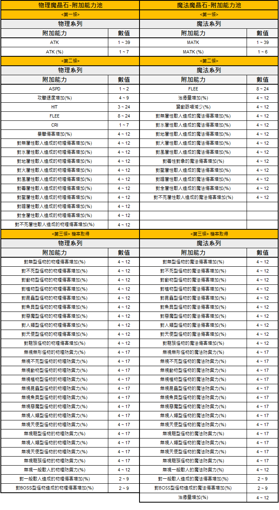

二級★武器附加能力 · Magic Crystal
★-Waffen Random Options (二級★武器附加能力)
Der exklusive Ability-Pool für ★-aktivierte Tier-2-Waffen — per Physical Magic Crystal oder Magical Magic Crystal appliziert.
🎯 Zielwaffen
Physical Magic Crystal (物理魔晶石)
Appliziert auf folgenden ★-Waffen:
- ★Altar Sword, ★Steel Axe, ★Crossbow, ★Double Blade Dagger, ★Chain Mace, ★Two-Handed Sword, ★Crecentia Bow, ★Rapier, ★Stunner
- ★Fist Blade, ★Halberd, ★Curved Spear, ★Knuckle, ★Lute, ★Steel Whip
- Neu 03/2026: ★★Two-Handed Sword-Swift, ★★Two-Handed Sword-Fang, ★★Halberd-Bless, ★★Halberd-Pierce, ★★Rapier-Limit, ★★Rapier-Domain, ★★Knuckle-Fighter, ★★Knuckle-Chi, ★★Crossbow-Spirit, ★★Crossbow-Roar
Magical Magic Crystal (魔法魔晶石)
Appliziert auf folgenden ★-Waffen:
- ★Crossbow, ★Double Blade Dagger, ★Oak Wand, ★Chain Mace, ★Crecentia Bow, ★Book
- ★Halberd, ★Curved Spear, ★Lute, ★Steel Whip
- Neu 03/2026: ★★Halberd-Bless, ★★Halberd-Pierce, ★★Crossbow-Spirit, ★★Crossbow-Roar
📋 Ability-Liste
Offizielle Tabelle aller Random Options für ★-Waffen (gilt für beide Magic-Crystal-Typen):

📋 Übersicht der Magic Crystal Verzauberungseffekte — Deutsch aufklappen
Diese Tabelle listet die möglichen Verzauberungsoptionen für physikalische und magische Ausrüstung durch Magic Crystals auf, unterteilt in drei verschiedene Slots.
| Physikalische Serie / Magische Serie | Zusatzeffekt | Wert |
|---|---|---|
| Physik | ATK | 1 ~ 39 |
| Physik | ATK (%) | 1 ~ 7 |
| Magie | MATK | 1 ~ 39 |
| Magie | MATK (%) | 1 ~ 6 |
| Physik | ASPD | 1 ~ 2 |
| Physik | Attack Speed (%) | 4 ~ 9 |
| Physik | HIT | 3 ~ 24 |
| Physik | FLEE | 8 ~ 24 |
| Physik | CRIT | 1 ~ 7 |
| Physik | Critical Damage (%) | 4 ~ 12 |
| Physik | Neutral Property Damage (%) | 4 ~ 12 |
| Physik | Water Property Damage (%) | 4 ~ 12 |
| Physik | Earth Property Damage (%) | 4 ~ 12 |
| Physik | Fire Property Damage (%) | 4 ~ 12 |
| Physik | Wind Property Damage (%) | 4 ~ 12 |
| Physik | Poison Property Damage (%) | 4 ~ 12 |
| Physik | Holy Property Damage (%) | 4 ~ 12 |
| Physik | Shadow Property Damage (%) | 4 ~ 12 |
| Physik | Ghost Property Damage (%) | 4 ~ 12 |
| Physik | Undead Property Damage (%) | 4 ~ 12 |
| Magie | FLEE | 8 ~ 24 |
| Magie | Heal Amount (%) | 4 ~ 12 |
| Magie | Variable Casting Time Reduction (%) | 4 ~ 12 |
| Magie | Neutral Property Magic Damage (%) | 4 ~ 12 |
| Magie | Earth Property Magic Damage (%) | 4 ~ 12 |
| Magie | Fire Property Magic Damage (%) | 4 ~ 12 |
| Magie | Wind Property Magic Damage (%) | 4 ~ 12 |
| Magie | Poison Property Magic Damage (%) | 4 ~ 12 |
| Magie | Holy Property Magic Damage (%) | 4 ~ 12 |
| Magie | Shadow Property Magic Damage (%) | 4 ~ 12 |
| Magie | Ghost Property Magic Damage (%) | 4 ~ 12 |
| Magie | Undead Property Magic Damage (%) | 4 ~ 12 |
| Physik | Damage to Formless (%) | 4 ~ 12 |
| Physik | Damage to Undead (%) | 4 ~ 12 |
| Physik | Damage to Brute (%) | 4 ~ 12 |
| Physik | Damage to Plant (%) | 4 ~ 12 |
| Physik | Damage to Insect (%) | 4 ~ 12 |
| Physik | Damage to Fish (%) | 4 ~ 12 |
| Physik | Damage to Demon (%) | 4 ~ 12 |
| Physik | Damage to Demi-Human (%) | 4 ~ 12 |
| Physik | Damage to Angel (%) | 4 ~ 12 |
| Physik | Damage to Dragon (%) | 4 ~ 12 |
| Physik | Ignore Def Formless (%) | 4 ~ 17 |
| Physik | Ignore Def Undead (%) | 4 ~ 17 |
| Physik | Ignore Def Brute (%) | 4 ~ 17 |
| Physik | Ignore Def Plant (%) | 4 ~ 17 |
| Physik | Ignore Def Insect (%) | 4 ~ 17 |
| Physik | Ignore Def Fish (%) | 4 ~ 17 |
| Physik | Ignore Def Demon (%) | 4 ~ 17 |
| Physik | Ignore Def Demi-Human (%) | 4 ~ 17 |
| Physik | Ignore Def Angel (%) | 4 ~ 17 |
| Physik | Ignore Def Dragon (%) | 4 ~ 17 |
| Physik | Ignore Def Player (%) | 4 ~ 12 |
| Physik | Damage to Player (%) | 2 ~ 9 |
| Physik | Damage to Boss (%) | 2 ~ 9 |
| Magie | Damage to Formless (%) | 4 ~ 12 |
| Magie | Damage to Undead (%) | 4 ~ 12 |
| Magie | Damage to Brute (%) | 4 ~ 12 |
| Magie | Damage to Plant (%) | 4 ~ 12 |
| Magie | Damage to Insect (%) | 4 ~ 12 |
| Magie | Damage to Fish (%) | 4 ~ 12 |
| Magie | Damage to Demon (%) | 4 ~ 12 |
| Magie | Damage to Demi-Human (%) | 4 ~ 12 |
| Magie | Damage to Angel (%) | 4 ~ 12 |
| Magie | Damage to Dragon (%) | 4 ~ 12 |
| Magie | Ignore Mdef Formless (%) | 4 ~ 17 |
| Magie | Ignore Mdef Undead (%) | 4 ~ 17 |
| Magie | Ignore Mdef Brute (%) | 4 ~ 17 |
| Magie | Ignore Mdef Plant (%) | 4 ~ 17 |
| Magie | Ignore Mdef Insect (%) | 4 ~ 17 |
| Magie | Ignore Mdef Fish (%) | 4 ~ 17 |
| Magie | Ignore Mdef Demon (%) | 4 ~ 17 |
| Magie | Ignore Mdef Demi-Human (%) | 4 ~ 17 |
| Magie | Ignore Mdef Angel (%) | 4 ~ 17 |
| Magie | Ignore Mdef Dragon (%) | 4 ~ 17 |
| Magie | Ignore Mdef Player (%) | 4 ~ 12 |
| Magie | Damage to Player (%) | 2 ~ 9 |
| Magie | Damage to Boss (%) | 2 ~ 9 |
| Magie | Heal Amount (%) | 4 ~ 12 |
Die Tabelle ist in drei Sektionen unterteilt, die jeweils den 'Slot' der Verzauberung repräsentieren. Die Werte zeigen den möglichen Bereich der jeweiligen Modifikatoren.
🗓️ Patch-Historie
- 02.10.2025: Neue Enchant-Targets ★Book, ★Two-Handed Sword, ★Crecentia Bow, ★Rapier, ★Stunner
- 27.11.2025: Neue Enchant-Targets ★Fist Blade, ★Halberd, ★Curved Spear, ★Knuckle, ★Lute, ★Steel Whip
- 24.03.2026: Neue ★★-Varianten hinzugefügt (siehe Listen oben)
💡 Praxis-Tipps
- Magic-Crystal-Entscheidung: Physical für Melee/Ranged-Physical-DPS, Magical für Caster-Builds — die Random-Pools unterscheiden sich
- ★★-Target-Priorität: Die neuesten ★★-Slots sind selten, aber liefern höhere Tier-Abilities — siehe ★★-Activation
- Kombinieren: Parallel zum ★-Activation-Flow planen, damit die Enchant-Schritte ohne Leerlauf aufeinander folgen
⚠️ Hinweise
Gravity behält sich Anpassungen an den Pools und Targets vor. Aktuelle Ergänzungen siehe Originalseite.